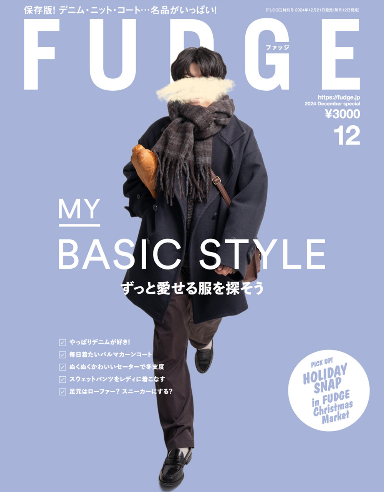

Je suis né en 2001 à Chiba, au Japon.
J'ai 23 ans.
Je travaille actuellement comme nouvel employé dans une société
informatique et j'essaie de nouvelles choses.
Je veux travailler dur, rencontrer beaucoup de gens
et vivre une vie heureuse.

About me
- -From-千葉 , 日本
- -Age-23
- -School-順天堂大学
- -Family-父, 母, 姉
- -Nickname-ばばちゃん, ばばしゅん
- -MBTI-INFJ